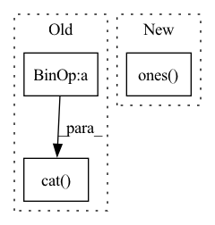

Pattern ID :26443
Before Change
matrix.indices()[0, :] != row_index]
replacement_row_indices = torch.stack(
[torch.tensor(row_index, device=matrix.device)]* len(row.values()))
replacement_indices = torch.stack([replacement_row_indices,
row.indices()[1, :]])
new_indices = torch.cat( [new_indices, replacement_indices], -1)
new_values = torch.cat([new_values, row.values()], -1)
new_matrix = torch.sparse_coo_tensor(
new_indices, new_values, size=matrix.shape,
dtype=matrix.dtype, device=matrix.device)After Change
dtype=matrix.dtype
)
addition_matrix = torch.sparse_coo_tensor(
torch.stack([torch.ones( row.shape[-1]) *row_index,
torch.arange(row.shape[-1])], 0),
row.squeeze(),
size=matrix.shape, device=matrix.device,In pattern: SUPERPATTERN
Frequency: 3
Non-data size: 3
Instances Fragment ID: 79291758
Project Name: v0lta/pytorch-wavelet-toolbox
Commit Name: ced7891d6e879825d3e5dc0d52e2c7fb08b22440
Time: 2021-09-27
Author: moritz@wolter.tech
File Name: src/ptwt/sparse_math.py
M Class Name: AnonimousClass
N Class Name: AnonimousClass
M Method Name: sparse_replace_row(3)
N Method Name: sparse_replace_row(3)
M Parent Class:
N Parent Class:
M File Name: src/ptwt/sparse_math.py
N File Name: src/ptwt/sparse_math.py
M Start Line: 82
M End Line: 107
N Start Line: 82
N End Line: 105
Before Change
mask = mask.repeat(N, 1, H, W).contiguous().long()
mask = (mask > label)
ord_p0[mask] = 0
ord_p1 = 1 - ord_p0
ord_prob = torch.cat( (ord_p0, ord_p1), dim=1)
return ord_prob
def __call__(self, prob, gt):
After Change
// print("gt shape:", gt.shape)
N, H, W = gt.shape
ord_c0 = torch.ones(N, self.ord_num, H, W).to(gt.device)
ord_label = torch.ones( N, self.ord_num*2, H, W) .to(gt.device)
if self.discretization == "SID":
label = self.ord_num * torch.log(gt) / np.log(self.beta)
else: Fragment ID: 79291761
Project Name: dontlovebugs/superviseddepthprediction
Commit Name: 07fe1714fc568b25bd80debe8dd3ab800ff576a8
Time: 2020-05-02
Author: wangxin_buaa@163.com
File Name: dp/modules/losses/ordinal_regression_loss.py
M Class Name: OrdinalRegressionLoss
N Class Name: OrdinalRegressionLoss
M Method Name: _create_ord_label(2)
N Method Name: _create_ord_label(2)
M Parent Class: object
N Parent Class: object
M File Name: dp/modules/losses/ordinal_regression_loss.py
N File Name: dp/modules/losses/ordinal_regression_loss.py
M Start Line: 35
M End Line: 38
N Start Line: 27
N End Line: 41
Before Change
device=wav.device,
dtype=torch.long,
)
factor = int(self.config.num_negatives // dynamic_num_negatives.item())
negative_sample_indices = torch.cat(
[negative_sample_indices] * factor, dim=-1
)
return (
self.model(
wav,After Change
// Fairseq does it only on the masked indices, but this only work if you
// have long sentences. For more versatily, we sample on the entire sequence.
// value.
full_sentence_indices = np.ones( (batch_size, sequence_length))
// print(np.sum(mask_time_indices, axis=1))
negative_sample_indices = torch.tensor(
transformers.models.wav2vec2.modeling_wav2vec2._sample_negative_indices( Fragment ID: 79291765
Project Name: speechbrain/speechbrain
Commit Name: f0cab3643a40b62ad19d5a3eaafbc8d19f4805e4
Time: 2021-12-11
Author: parcollet.titouan@gmail.com
File Name: speechbrain/lobes/models/huggingface_wav2vec.py
M Class Name: HuggingFaceWav2Vec2Pretrain
N Class Name: HuggingFaceWav2Vec2Pretrain
M Method Name: forward(2)
N Method Name: forward(2)
M Parent Class: nn.Module
N Parent Class: nn.Module
M File Name: speechbrain/lobes/models/huggingface_wav2vec.py
N File Name: speechbrain/lobes/models/huggingface_wav2vec.py
M Start Line: 362
M End Line: 398
N Start Line: 351
N End Line: 369